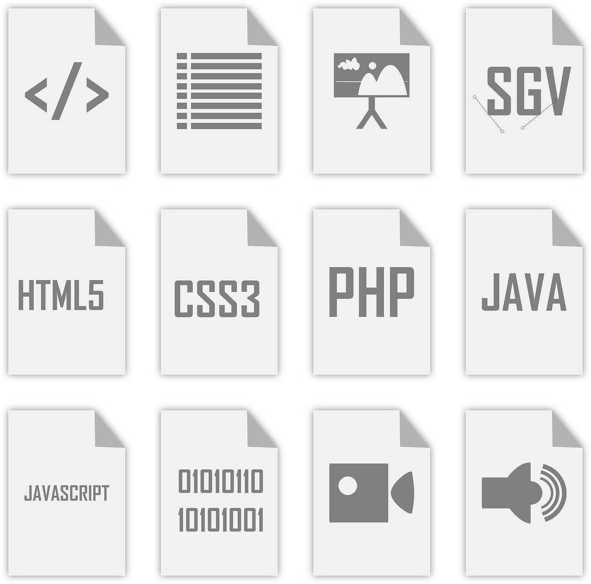
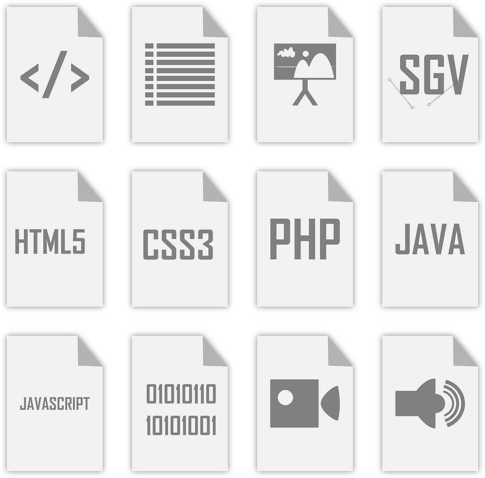
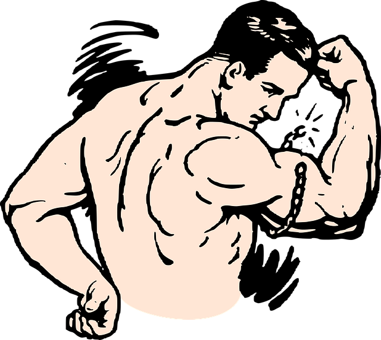

Tervetuloa Samuelin sivustolle

Harrastukset
Salilla käynti, koripallo, ja muuta urheilua.


Osaamiset
IT, ohjelmointi, ja tekoäly.

 

Vahvuuskirje
Moikka! Minun nimeni on Samuel Fizum, ja opiskelen tietojenkäsittelyä Haaga-Heliassa. Olen innokas oppimaan
uutta, ja uskon, että taitoni ja asenteeni tekevät minusta hyvän työntekijän monenlaisiin tehtäviin.
Yksi vahvuuksistani on nopea oppiminen. Esimerkiksi edellisessä työssäni vartijana opin nopeasti
erilaiset valvontajärjestelmät, mikä auttoi minua varmistamaan sujuvan toiminnan kiireisinäkin aikoina.
Olen myös erittäin analyyttinen. Ongelmanratkaisukykyni ja päätöksentekotaitoni on tunnustettu
opettajien ja kavereiden toimesta, erityisesti haastavissa aineissa, kuten kemiassa, fysiikassa ja
shakissa.
Tykkään myös kokeilla asioita kuten kieltä ja ohjelmia vapaa-ajalla. Esimerkiksi opin Blender
ohjelma, jolla pystyy tekemään kolmiulotteisia animaatioita.
Vapaa-ajallani pidän itseni aktiivisena pelaamalla koripalloa ja käymällä salilla. Nämä
harrastukset auttavat minua pysymään kurinalaisena ja energisenä.